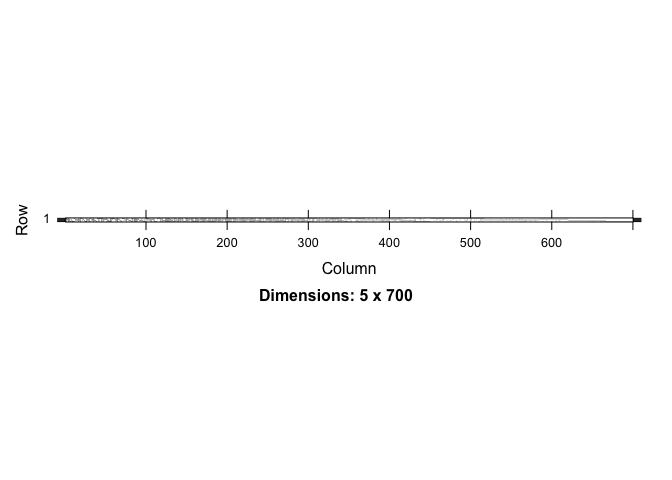
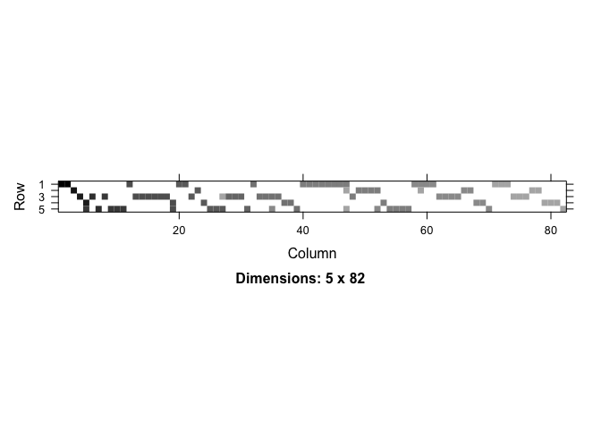
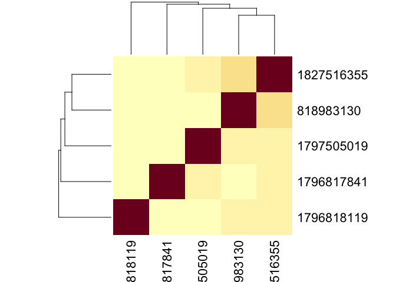
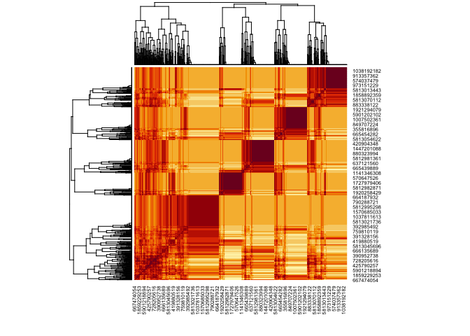

The goal of coconat is to provide dataset agnostic support for connectome analysis.
It is intended to have a mix of end-user functionality and functions that are principally intended as building blocks for more specialised packages such as https://natverse.org/neuprintr/ or https://natverse.org/fafbseg/
Installation
You can install the development version of coconat from GitHub with:
# install.packages("devtools")
devtools::install_github("natverse/coconat")Example
This is a basic example which shows you how to solve a common problem:
library(coconat)
# da2ds=neuprintr::neuprint_connection_table('DA2_lPN', details=TRUE, partners='out', conn = hbconn)
da2ds=readRDS(system.file('sampledata/da2ds.rds', package = 'coconat'))
head(da2ds)
#> bodyid partner prepost weight name type
#> 1 1796817841 5812982273 1 28 KCg-m_R KCg-m
#> 2 1796817841 574377845 1 28 LHAV3f1_R LHAV3f1
#> 3 1797505019 1202410042 1 27 KCg-m_R KCg-m
#> 4 1796818119 632402333 1 26 KCg-m_R KCg-m
#> 5 1827516355 5813055865 1 26 LHAD1f2_R LHAD1f2
#> 6 1796818119 5813080766 1 24 KCg-m_R KCg-m
library(Matrix)
am=partner_summary2adjacency_matrix(da2ds, inputcol = 'bodyid', outputcol = 'partner')
image(am)
am2=partner_summary2adjacency_matrix(subset(da2ds, weight>=15),
inputcol = 'bodyid', outputcol = 'partner')
image(am2) Now we can also cosine cluster
We can do this for the inputs (the 5 PNs should look much the same)
heatmap(cosine_sim(am, transpose = T))
Or the outputs
heatmap(cosine_sim(am))
But it would of course be more useful if we did this based on a richer set of inputs